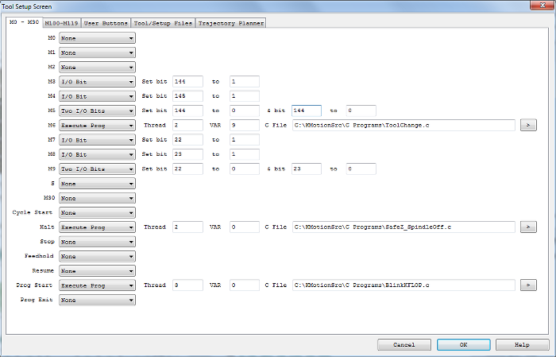
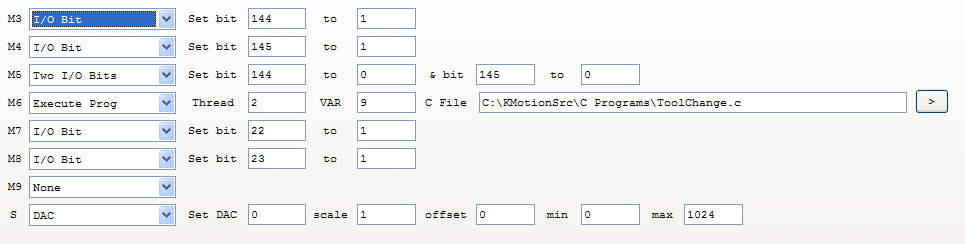
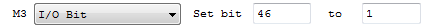
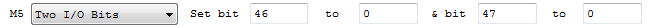
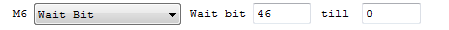
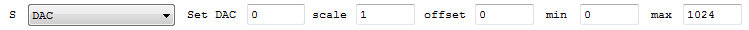
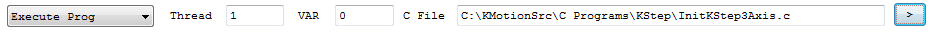
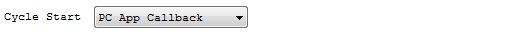

Tool Setup Screen - M0 - M30

(Click on image to jump to related help)
The Tool Setup Screen allows KMotionCNC to be configured for a particular machine tool. Each machine tool is likely to have different motion resolution, speeds, and acceleration limits. It is also likely have to different IO requirements with regard to Spindle control and such. Additionally a machine may have different initialization and homing requirements. KMotionCNC has a flexible mechanism for defining what type of action is to be performed for various M Codes and Custom Buttons. See here how to password-protect these parameters.
G Code Actions - M0 - M30

The M Codes 0 through 9 have functionality commonly used by most machine tools. These can also be used as custom or general purpose M codes in the same manner as the M100-M119 M codes with the exception of M5 and M9 which are automatically executed on Program Stop or Rewind.
M0 - Program Stop
M1 - Optional Program Stop
M2 - Program Stop, Rewind, Reset Interpreter Settings
M3 - Spindle On CW
M4 - Spindle On CCW
M5 - Spindle Off - Note Automatically called on Program Stop/Rewind
M6 - Tool Change (T variable is passed to the C program in the persist variable specified)
M7 - Mist On
M8 - Flood On
M9 - Mist and Flood Off
S - Spindle Speed Setting. If C Program is specified Speed in RPM is passed to the specified KFLOP/Kogna Var as a 32-bit floating point number
M30 - Program Stop and Rewind
The Actions section of the Tool Setup Screen defines what action is to be performed when a particular G Code Command (Mostly M Codes) is encountered.
Additionally Actions can be performed when certain KMotionCNC functions occur. These include:
Cycle Start - Action performed when the Cycle Start Button is pressed and before G Code begins execution
Halt - Action performed when the Halt Button is pressed after G Code stops execution. Commonly used to execute a C Program to move the Z axis to a safe height and turn off the Spindle. See the SafeZ_SpindleOff.c as an example.
Stop - Action performed after Stop Button is pressed
FeedHold - Action performed after Stop Button is pressed
Resume - Action performed after FeedHold is released
Program Start - Action performed at KMotionCNC Program Startup
Program Exit - Action before KMotionCNC Program Exits
The Action that can be performed can be one of several things:
- None
- Set or Reset one IO Bit
- Set or Reset two IO Bits
- Set a DAC to a variable's value (S parameter)
- Wait (stall motion) until an Input to be in the specified state
- Execute a C Program in the KMotion Control Board
- Execute a C Program in the KMotion Control Board + wait for it to terminate
- Execute a C Program in the KMotion Control Board + wait for it to terminate + resync Interpreter positions
- Execute a Windows Program
- PC App Callback
- Screen Script File
To specify a particular action first select the Action Type. Each Action Type requires a different number and type of parameters. Next fill in the appropriate parameters. The one and two bit IO commands are inserted directly into the coordinated motion control buffer. In this way they are exactly synchronized with any motion before or after the IO commands. This is useful in systems where a fast shutter or other operation is required at precise times relative to the motion.
The seven Action Types are described below:
For one IO bit specify the IO bit number and the state 0 or 1 to set it to.

For two IO bits specify the IO bit numbers and the state 0 or 1 to set each to. Often systems with two direction spindle control will require setting two outputs that control on/off and cw/ccw. This command is designed to handle those situations.

For a special command to pause motion until an external Input is activated select Wait Bit and specify the IO bit number and the state 0 or 1 to wait for.

For DAC specify the DAC (Digital to analog converter) channel number, how to scale and offset the associated variable, and the minimum and maximum allowed DAC settings. This command is primarily designed for use with the S (Spindle speed) G Code Command.

For Execute Prog specify the program Thread (1 through 7) where the program is to be downloaded and executed, a Persist Variable (0-199) that will be set before the program executes, and the name of the C Program to be Compiled, Downloaded, and Executed. This method is very powerful in that anything that may be programmed in C may be invoked. See the KMotion documentation and wiki for information on writing C Programs for the KMotion Motion Control Board. There are a number of example C programs in the <Install Dir>\C Programs folder. The Example "\KStep\InitKStep3Axis.c" s an example which completely configures all necessary parameters in the KFLOP/Kogna Board to drive 3 stepping motors using KStep's amplifiers.
Warning - Thread assignment: Executing a program on a Thread kills and replaces whatever program was previously running on that Thread. Persistent programs - an Initialization program with a forever loop, an E-stop or limit watchdog, a pendant service, and similar - must be assigned a Thread that no other Action, M-Code, or program will ever be launched onto. For example, if an Initialization program runs forever on Thread 2 and the Spindle S Action is also assigned to Thread 2, the first S word of a job silently terminates the Initialization program (and any safety monitoring inside it) for the remainder of the session. Reserve a dedicated Thread for each persistent program and keep the Threads used by M-Codes and Actions separate from them.
Persist Variables are used for passing parameters and information to KFLOP/Kogna before executing the C Program. The parameters are Action Specific. The 'S' Action will pass the Speed as a 32-bit Floating point value. The 'M6" Tool Change Action will pass the Tool Slot and Tool ID as 32-bit integer values in consecutive Persist Variables. MCodes can pass G Code PQR Parameters. See here for an example. If no parameter is associated with the Action, then the Action Table Index will be passed that can be used to inform the C Program which Action invoked it. Specifying a Var value as "-1" will not write anything into any variable.
Note that normally the *.c Source Program File is specified, which simplifies making any changes as they will automatically be re-compiled and have effect. C Source programs are also independent of KFLOP/Kogna Version as they are always Compiled to the current version before use. However it is possible to specify an *.out binary file that has already been compiled for faster operation since it has already been compiled and only needs to be downloaded. When a file is compiled into binary executable code it is compiled to run in a particular Thread space (memory specific) and also for a particular KFLOP/Kogna Version. The compiler automatically marks the filename with (N).out. Where N is the Thread number that the code has been compiled to run in.
If the Filename is left blank, then it will be assumed that a program has been previously downloaded to the specified Thread and will just be re-executed. It is up to the designer to make sure a valid program has been downloaded and still exists in the specified Thread Space.
Additionally a program filename specified with a *.ngc extension will be treated as G Code and the G Code Interpreter will be invoked to execute the G Code file. Note that the G Code Interpreter is not re-entrant (Interpreter can not call itself). This means that MCodes and other Actions invoked by the Interpreter can not Invoke G Code. This restriction also applies to C Programs that may in turn execute G Code. This essentially limits User Buttons and Special Commands (ie Program Start) to specifying G Code for execution. This functionality should be limited to simple G Code operations that should execute quickly.

PC App Callback allows a user-compiled Callback Function to be called as an Action. However, this is a feature not commonly used unless you are modifying/recompiling KMotionCNC.

Screen Script File allows users to change/select different screen script files.